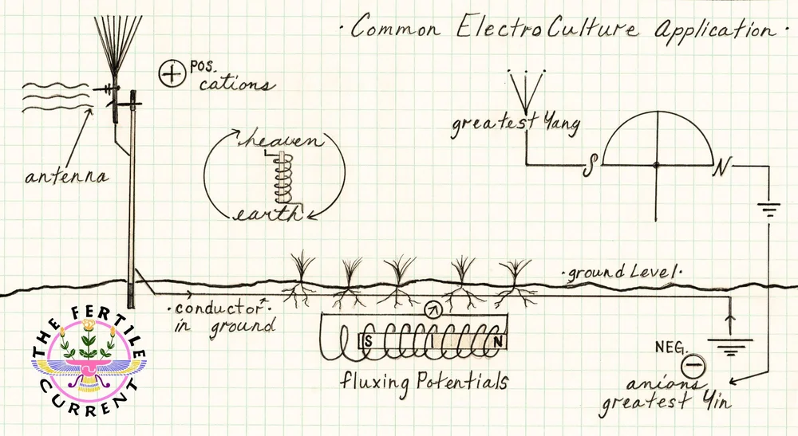
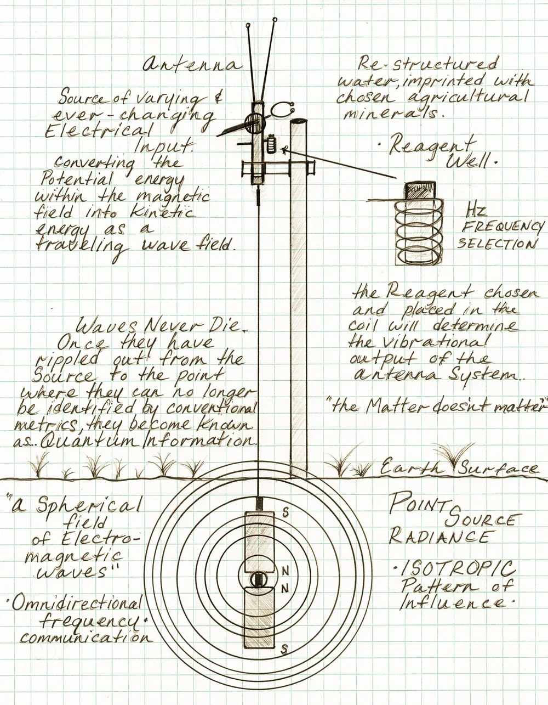

Shop Electroculture antennas, Water Energetics & Radionics.
Antennas, ground systems and the accessories that hold an installation together.
Electroculture is an agricultural expression of the marriage between Heaven and Earth.
Omnipresent, universal circuitry that can be observed as the vivifying force from the cellular level to the macrocosmic.
Through antennas and conductors, we vectorise and focus this generative and radiating current to the benefit of terrestrial food production and overall fertility.
This diagram is representative of a common and time-honoured electroculture field installation.

Living waters through current.
Water with organised and energised molecule clusters is often referred to as "structured" or "living" water. This vital water is highly bio-available and has many advantages in both agriculture and health.
Vibrational homeopathy for every terrain.
Everything has a vibrational rate or "frequency" at which the positive and negative potentials interchange. Radionics is the practice of utilising these vibrational rates along with variable resistance and capacitance patterns to influence matter and/or achieve a specific result. Essentially, Radionics is vibrational homeopathy, and is applied to agriculture and health most commonly.
Radionics is scalar technology that works through subtle eloptic energy. Eloptic energy is energy that has some of the characteristics of electricity and some characteristics of optical light.
Much like choosing a radio station, selected sample and reagent patterns broadcast through the soil when placed in the circuited well and powered by the potential difference between Heaven & Earth.
The broadcasting strength is increased by connecting the Electroculture antenna, providing more positive phase to flux with the endless depot of negative phase ions within the Earth. There is a bottom-plate anode, buried approximately 2 ft deep, that contacts the soil.
Field maps are used to limit broadcast range and set the boundaries of intent. Each Patterns broadcaster well receives a map, along with physical samples and reagents.
The circuit, provided by researcher Hugh Lovel, utilises a choke coil to mitigate the antenna's RF effect, germanium diodes in parallel to restrict the direction of energy flow, a resistor to displace vibrational signals, and a broadcast coil to transmit.
Heaven advances with supreme discipline. Earth receives with limitless capacity.
Each unique, yet indivisible — these divine phases become the ONE generative force that gives unceasingly and without reserve.

Chris created The Fertile Current's offerings to be rooted in function and effectiveness, centred in solutions which represent the omnipresent dynamo that is the power source for all living expressions.
Highly involved with electroculture, radionics, field broadcasting and water energetics — both on his farm in Tennessee and with agriculturalists worldwide — he applies esoteric learning, knowledge of energy work and over 13 years of vegetable growing to creating a system of regenerative agriculture utilising the benevolence of hyper-dynamic agriculture.
The Fertile Current equipment expresses the universality of life's circuitry through a union of ancient knowledge with quantum mechanics, pragmatically applied to working farm food production.
We're honoured to bring Chris's years of exploration to the world community.